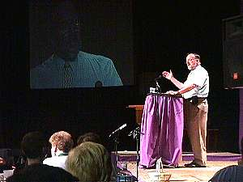

|
|
News Release/Summary | English
Transcript | en Français
Anglican bishop defines church's role
in politics and "justice" issues
Anglican Bishop of
Montreal Andrew Hutchison has given members of the church's chief governing body a vision
of the church in Quebec that would see it stay out of partisan politics while pursuing
goals of reconciliation, justice and peace.
Speaking on the theme of "nation and identity," Bishop
Hutchison told 300 members of the Anglican General Synod meeting here this week that the
church has no mandate to advocate one form of government over another.
"How we choose to organize ourselves for collective security and
well being is a political question that must be settled by voters at the ballot box, be
they Christian or not," he said.
But the bishop added: "We do, on the other hand, have a mandate
... to strive for justice and peace among all people and respect the dignity of every
human being.
"It is my view that the church has no business aligning itself
with the Yes or the No side of a referendum on such issues. It must, however, be vigilant
in safeguarding the fundamental rights and well being of its citizens. It is not
acceptable to achieve a political agenda at the cost of the just and core values of a
society."
Bishop Hutchison admitted that as leader of an overwhelmingly
anglophone diocese in a francophone province, his refusal to take political sides has at
times been uncomfortable both for him and for members of the church who look to him for
leadership.
On the other hand, he said he has not hesitated to speak passionately
on political issues, both in private and in public, where he feels that questions of
justice are involved.
He noted that he has spoken out on the question of native
self-determination and on the removal of Passover foods from store shelves because they
lacked French language packaging. "These are matters that for me touch our baptismal
commitment," he explained. "Political organization, on the other hand, does not
in such an obvious way."
Bishop Hutchison's address was an introduction to a session later in
the day in which an invited panel was to engage General Synod in a discussion on
"nation and identity." The bishop told the gathering that in the context of his
views on church and politics, it "is important to say that we do not intend a debate
on the issue of the aspirations of Quebec or any group."
Rather, he added, it was important that General Synod members be
exposed to an exchange of information, to the realization that concerns about issue of
nation and identity are common among many groups across the country and to the exploration
of ways in which these diverse groups can help each other.
On the question of Quebec, however, Bishop Hutchison said it is a myth
that Canada consists of "two solitudes." Politicians and others, he said, have
been quick to exploit this myth of a nation based on a duality for their own purposes.
"It is a myth that does not take into account societies that have
evolved clear across this land over thousands of years prior to European immigration. It
takes no notice ... of any countries other than France and Great Britain." The myth
as exploited by politicians "has effectively re-enforced a victim mentality among
French Québecois," he said.
Rather than a nation of two solitudes, Bishop Hutchison argued, Canada
is, in fact, based on a notion of partnership, an area, he added, where the Anglican
church has a great deal to teach the rest of the country.
The Anglican concept of partnership, he said, consists of listening to
others, understanding their aspirations and sharing resources required for them to achieve
their dreams.
"I believe that the partnership principle that has become so
respected internationally and in the affairs of our church in Canada could have a wider
application within our land and serve us well in the future," Bishop Hutchison said.
-30-
NOTE TO EDITORS: The plenary sessions of General Synod are held in the Arthur Currie
Memorial Gymnasium at 475 Pine Avenue at McGill University. This evening's panel begins at
7:15 p.m.
Members of the panel are former Quebec Liberal leader Claude Ryan,
Grand Chief Matthew Coon-Come of the Grand Council of the Cree, the Hon. Brian Smith,
former Attorney General of British Columbia and current chairman of BC Hydro and Power
Authority, Archdeacon Rod Gillis of Cape Breton, and Joan Fraser, Director General of the
Centre for Research and Information on Canada and a former editor of the Montreal Gazette.
The moderator will be Senator Ann Cools. |